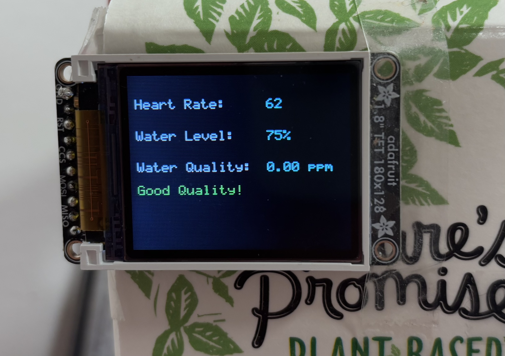

HRS 01 - The project shall be based on an ATmega328PB microcontroller operating at 16 MHz
Status: Achieved
The ATmega328PB microcontroller is configured to operate at a clock frequency of 16 MHz. All sensor integrations and peripheral devices are functioning within this setup.
Supporting Evidence:
- Verified through firmware and hardware configuration, including successful SPI and UART communications.
HRS 02 - FSR406 capacitive sensing system shall be implemented with:
Status: Achieved
Implemented:
- Basic capacitive sensing system using pressure sensor (FSR406) instead of capacitive one (FDC1004).
- Achieved 5% resolution for water level detection.
Supporting Evidence: Pressure sensor measurements were tested and validated for a detection range of 0-1.9L, and it is mapped to 0%, 25%, 50%, 75% and 100%.
Screenshot:

HRS 03 - LCD shall output measured values and reminders
Status: Achieved
LCD successfully displays heart rate (BMP), water level (%), and water quality (PPM) in real-time. Also, it can remind you if the water is suitable to drink or you have not drink for long time.
Supporting Evidence: Real-time LCD screenshots showing accurate updates of heart rate, water level, and water quality.
Screenshot:
HRS 04 - ESP32 module shall update date shown in LCD into Blynk platform
Status: Achieved
The ESP32 module is connected to ATmega328PB through level shifter. It is integrated for wireless communication and uploads data to the Blynk platform via Wi-Fi.
Supportive Evidence:
HRS 05 - MAX30102 heart rate sensor shall be integrated with an accuracy of ±3 BPM
Status: Achieved
Supporting Evidence: We compared the value of BPM detected by our system and the one tested through medically certified fingertip pulse oximeters available on the market. We been found there is a deviation of only 4 BPM.
HRS 06 - TDS sensor shall measure water quality in a range of 0-1000ppm with ±2% accuracy
Status: Achieved
Our TSD sensor can successfully judge the water is filtered pure water or tap water from the faucet.
Supporting Evidence:
HRS 08 - Power Management
Status: Achieved
We used LM7805 Linear Voltage Regulator in a TO-220 package to realize voltage reduction to 5V.
Supportive Evidence: